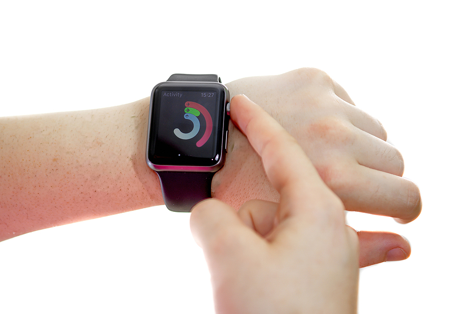
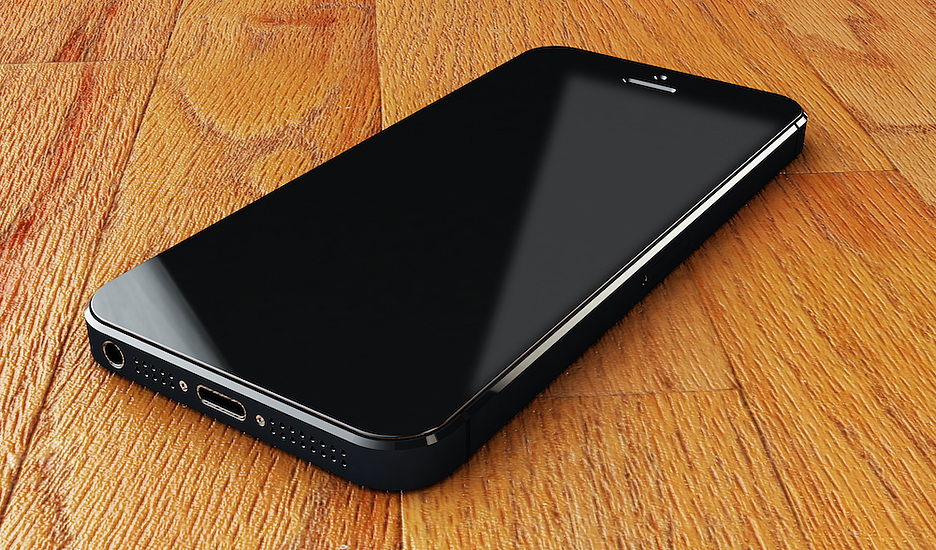
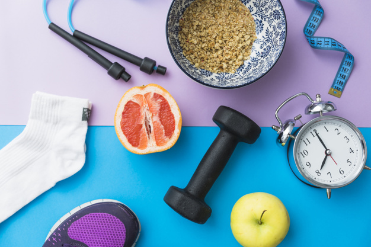
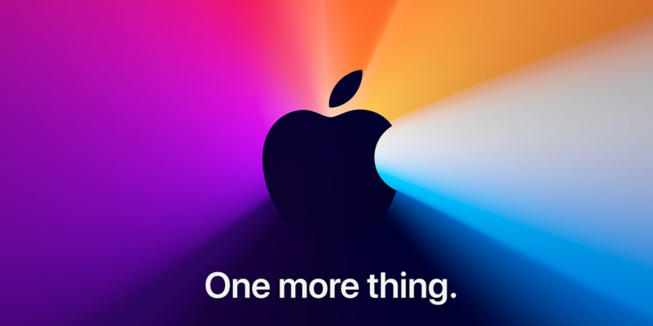

Мы подготовили самые свежие новости для вас
Новости информационных технологий. Новинки ИТ, события на IT Рынке, компьютеры, гаджеты, телекоммуникции: все аспекты ИКТ в России и мире.
-
От Apple ждут скорой замены интеловских чипов в Mac
Официального заявления о переходе на использование в компьютерах Mac чипов, разработанных по технологии ARM (взамен нынешней технологии Intel)
Дата: 12 ноября 2020 -
Microsoft: новые ноутбуки Sufrace Book 3 ожидаются в мае
Microsoft планирует выпустить новый ноутбук Surface Book 3. В качестве процессора будут выступать Intel i5-10210U и i7-10510U 10-го поколения, которые
Дата: 14 ноября 2020 -
AirTag – противокражный брелок
Apple допустила утечку информации об устройстве AirTag – противокражном брелке, основная задача которого является поиск потерянных или забытых вещей через ...
Дата: 16 ноября 2020 -

Часы Apple Watch могут стать модульными
Покупатель или владелец часов сможет, по замыслу разработчиков, сам адаптировать часы под свои конкретные требования, выбирая наиболее подходящий модуль
Дата: 18 ноября 2020 -

Бюджетный iPhone 9 (он же iPhone SE 2) будет маленьким и доступным
Впервые за четыре года не придётся ждать сентября, когда Apple обычно выпускает новые модели iPhone. Apple, планирует выпустить новый 4.7" iPhone
Дата: 22 ноября 2020
-
Google улучшит работу Chrome с памятью в Windows 10
В этом месяце Google выпустила Chrome 87, с которым браузер получил...
Добавлено: 12 ноября 2020 -
Как добавить сервисы Google в смартфоны Huawei и Honor?
Установка Google Mobile Services в обход официальных ограничений напоминает...
Добавлено: 13 ноября 2020 -
«Умные» устройства: от идеи до упаковки
Все начинается с идеи. Иногда она рождается на шумном брифинге, а иногда...
Добавлено: 14 ноября 2020 -
Apple готовит самый маленький iPhone 12 mini
Введение «мини-iPhone» - неожиданное решение Apple. Устройство iPhone 12 Mini будет...
Добавлено: 15 ноября 2020 -

Apple Watch Series 6: первые покупатели и первые впечатления
Что больше всего понравилось пользователям? Ремешки Solo Loop и Braided Solo Loop...
Добавлено: 16 ноября 2020 -

ФАС обвинила Apple в нарушении антимонопольного законодательства
В России Apple не впервые обвиняется в злоупотреблении на рынках приложений...
Добавлено: 17 ноября 2020 -
ИТ-маскировка: прячем конфиденциальную информацию от злоумышленников
Маскирование данных – способ устранять каналы утечек, успешно применяемый многими заказчиками...
Добавлено: 18 ноября 2020 -
Technics возвращается в Россию
После 16-летнего перерыва в России можно официально приобрести премиальные...
Добавлено: 19 ноября 2020 -
Выбираем принтер для фотографа: скорость, качество, количество
Редкий случай, когда рекомендации для профессионалов и любителей практически...
Добавлено: 19 ноября 2020 -
Видеозвонки в Telegram: подключаем за 5 шагов
Пока новая функция в мессенджере находится на стадии тестирования и доступна...
Добавлено: 20 ноября 2020 -
Twitter отложил запуск нового API после массового взлома аккаунтов
Компания сообщает, что не имеет доказательств, что инцидент имел отношение к API...
Добавлено: 21 ноября 2020 -

HP: как защититься от киберугроз на «удаленке»
Число жертв кибератак за 2019 год выросло на 5%, рискам в сети подверглись 79% опрошенных...
Добавлено: 22 ноября 2020